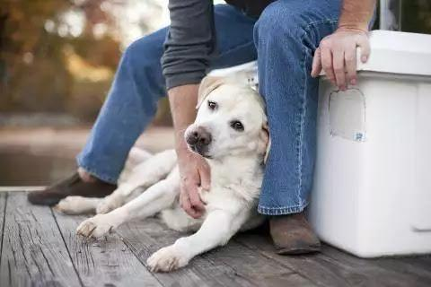

Dog Lists
Things Dog Love:
-
Collecting trophies
- Dogs love taking personal items that are not theirs, especially if they are on your property. For them they are trophies because they are part of you (their favourite person) and carry your scent. As well as collecting them, they will often take them to other rooms and hide them in places like under cushions or in the laundry. They also have this tendency because they will do anything to get your attention, even if it means behaving "badly". They hide your stuff because they like interacting with you. It also stops them from getting bored, because it gives them something to do, as if they were on a mission.
- Many human companions of dogs think their pet loves to eat while they are watched or they see food as a social event. Although some dogs like to eat when their owners eat, for the dog the act of eating is a personal moment. For a domesticated dog, you are the leader of the pack, so your dog will feel more comfortable eating in a private space where they can be sure that the alpha male won't steal their food- this applies to any food or treat. Don't be surprised if your dog takes what you give it into another room. You will see that it is its canine nature.
- Your dog is part of you in the same way that you are part of them.Being close to your side is one of the most common behaviours and is therefore another thing dogs love doing. These dogs are saying to all who approach "move, this human is mine!" They do this to minimise as much distance as they can between you, and to transfer odors. This is a social-emotional-biological habit. Some experts suggest that this behaviour indicates protection on the part of your dog. They are working as a barrier to intruders while you provide a blanket of security, confidence and comfort to them.
- When they leave home, many people leave the television on to accompany the dog in their absence. Although dogs cannot see like humans, they appreciate the light, colours and sound a lot. For them it can be mental stimulation and therefore is one of the things dogs love. In fact, some experts claim that dogs really enjoy watching TV because it helps them relax and fight boredom. However, these same animal experts emphasize that television should not be a substitute for love, human attention and exercise.
- Have you ever seen a dog swim? It is a scene full of joy because they look like they are enjoying it immensely. Swimming is an activity that most dogs love like no other, and they also have an amazing ability to do it so much better than most people. For most dogs, swimming it is a great alternative fun exercise to a walk at any time of day.

Eating alone

Always being by your side

Watching TV

Swimming

5 amazing facts about dogs
Dogs are great – they provide us with love, companionship and are always there when we need them. But did you know there’s far more to dogs than meets the eye?
We all know dogs have been ‘man’s best friend’ for thousands of years, but there’s loads more to our four-legged friends which makes them really amazing.
We’ve put together some of our favourite canine facts so you can learn a little more about your pooch.
-
Their sense of smell is at least 40x better than ours
The area of cells in the brain that detect different smells is around 40 times larger in dogs than humans. This means that your dog can pick up on way more smells than we ever could. This is why dogs are often used to sniff out people, drugs and even money!
In fact, a number of our own hero hounds were awarded PDSA medals for their noses! Arms and explosives search dog Buster (pictured above) was awarded his PDSA Dickin Medal in 2003 for his remarkable service in Iraq – he located a large amount of weapons and explosives linked to an extremist group, saving the lives of many civilians and service personnel. Read more stories about our incredible medal recipients.
-
Some have such good noses they can sniff out medical problems
Yup, medical detection dogs are a thing. Because their sense of smell is so great, some dogs can be trained to sniff out medical conditions. They are used to diagnose a particular condition or to alert their owners if they need more medication. Some are even being trained to sniff out Covid-19! One of these incredible dogs is Medical Detection Dog Pal (pictured above), who was awarded the PDSA Order of Merit. Pal played a vital role in diabetic owner Claire’s life by alerting her of changes in her blood sugar. If not caught in time, these changes could have killed her.
-
Dogs are about as intelligent as a two-year-old
Studies have shown that dogs can learn over 100 words and gestures, which puts their intelligence and understanding of us on a par with a two year old. However, dogs are much easier to train than a two year old! They’re used for all sorts of jobs, from military roles to assistance dogs, because they’re both clever and extremely loyal animals.
-
Some are fast and could even beat a cheetah!
Most dogs could easily outrun a human – they’re built to run and chase! The fastest breed of dog by far, though, is the Greyhound. These speedy sight hounds can reach a top speed of 45mph within seconds of starting to run ‘But how does this beat a cheetah?’ we hear you ask. Well, while a cheetah can get up to almost 70mph, they can only keep this going for around 30 seconds. Greyhounds, on the other hand, could easily run at speeds in excess of 35mph for seven miles. So despite the cheetah’s head start, they’d soon overtake!
-
Dogs can sniff at the same time as breathing
Dogs rely a lot on their sense of smell to find food, potential dangers, and friends, so needless to say they sniff a lot. Their noses are designed so smells can stay in their nose while air can move in and out of their lungs at the same time, which means they can breathe freely and still work out what that smell is!